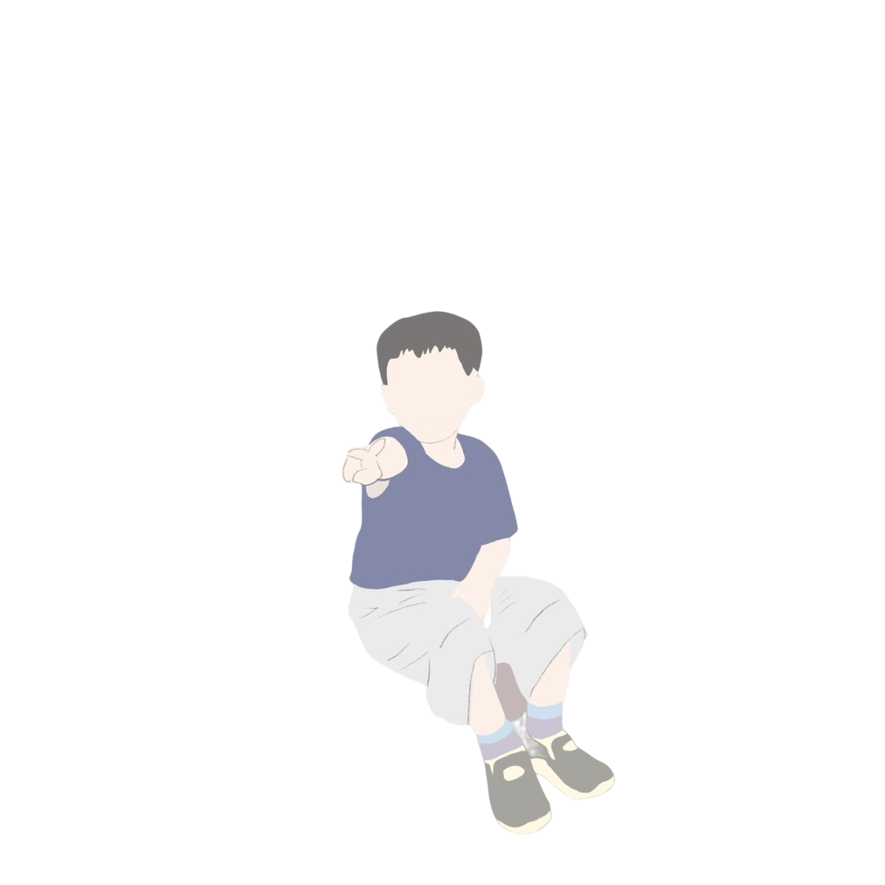

關於我
我目前就讀於師大資工所，研究領域為電腦視覺，目前在物件偵測、自監督、半監督、圖像生成皆有涉略與研究
我的主要技能為Data Mining,Data visualization,Deep Learning,Computer Vision,Full-Stack Devlop
| 自我簡歷 |
就讀於師大資工所，研究領域為電腦視覺，研究方向包含物件偵測、自監督、半監督、圖像生成，專長為 Data Mining,Data Visualization,Deep Learning,Computer Vision,Full-Stack Development... |
| 學歷 | 中國文化大學應用數學系、臺灣師範大學資訊工程研究所 |
| 經歷 |
|
| 專長 |
|
| 語言 |
|
| 興趣 |
|